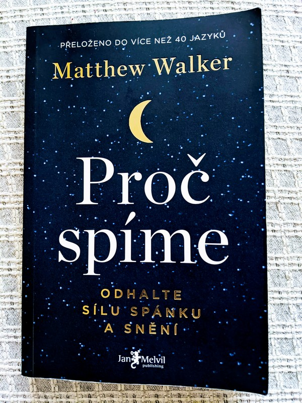
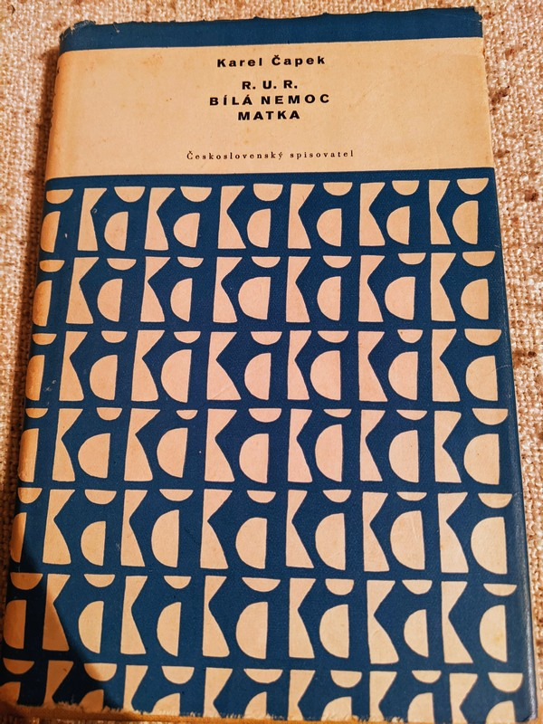
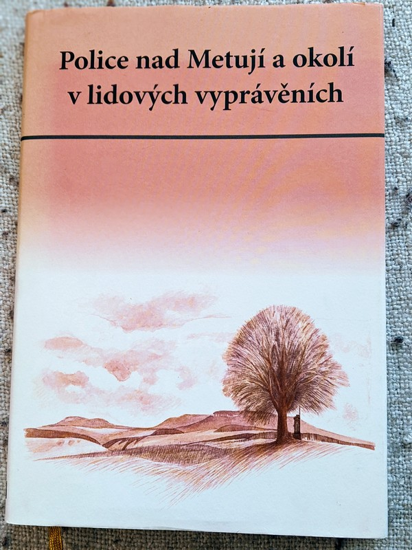
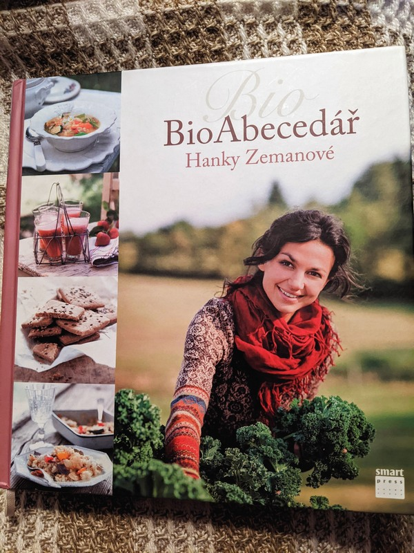

S blížícím se koncem roku mě tak trochu chytá nostalgie a strach ze všech těch změn, které mě s příštím rokem čekají. Třeba to nakonec budou i povětšinou pozitivní změny - jen jich je najednou v tom mém poklidném životě nějak moc. Knížky jsou každopádně pořád mojí terapií a lékem na vše, a tak vás o literární poklady tohoto podzimu rozhodně neochudím :-)
Matthew Walker - Proč spíme
“Nejlepším mostem mezi zoufalstvím a nadějí je dobře prospaná noc.”
Již tradičně tu mám jednu “Mellvilovku”, která určitě zaujme všechny příznivce knihy Cirkadiánní kód, jejíž téma ještě prohlubuje a rozvíjí. Na můj vkus už je oproti výše jmenovanému titulu místy trochu moc “vědecká”, ale zároveň si na spánek posvítíte opravdu zevrubně a dozvíte se spoustu souvislostí, které by vás dříve ani nenapadly. Pro mě bylo až nečekané, na co všechno má zdravý (či spíše nezdravý) spánek vliv a jakou může mít spojitost s rozvojem různých onemocnění, kupříkladu Alzheimerovy choroby. Pokud se o spánkovou hygienu vážně zajímáte, tato kniha by vám na osobním to read listu rozhodně chybět neměla.

Karel Čapek - R.U.R./Bílá nemoc/Matka
“Kdyby se za vlast neplatilo životem… kdyby se za čest, za pravdu, za svobodu neplatilo životem, neměly by tu ohromnou, tu strašnou cenu…”
Ani si nepamatuju, kdy naposledy jsem při četbě sáhla po nějakém dramatu. A ještě po takové klasice! Čapek je prostě nesmrtelný a zrovna u těchto tří dramat je přímo do očí bijící, jak ohromně je nadčasový! Mně osobně z této trojice nejvíc oslovila Bílá nemoc (možná tou aktuální válečnou situací, ale i jistou paralelou s covidem, a možná tím starým pacifistou ve mně :-), ale úryvek jsem nakonec vybrala z Matky (protože rovněž válečné téma a protože jako matka už to drama vždycky budu vidět v jiném světle, než když jsem ho četla někdy v době kolem maturity poprvé).

Eva Koudelková - Police nad Metují a okolí v lidových vyprávěních
A zase trochu nostalgie a vzpomínek - tentokrát na naši dávnou prázdninovou dámskou jízdu v Adršpachu, odkud jsem si jako suvenýr přivezla tuto knihu lokálních pověstí s hezkými ilustracemi Dagmar Novákové, které mě na ní zaujaly. Původně, když jsem knížku teď po letech vytáhla z knihovničky, jsem myslela, že si ji třeba budeme číst společně s Olíkem na dobrou noc, ale některé pověsti mi přišly poněkud drastické, takže jsem si je pak po večerech spíš pročítala sama :-D

BioAbecedář Hanky Zemanové
O “dovolené” u našich jsem se prolouskala touto objemnou “encyklopedií” zdravé stravy, kterou jsem jim kdysi dávno nadělila k Vánocům. Nutno dodat, že v době, kdy vyšla poprvé (2010 tuším?) bylo u nás ještě spoustu surovin, které dnes už běžně koupíte v supermarketu, doménou zdravých výživ a různých alternativních obchůdků. Je skvělé vidět, jak se v tomto směru naše stravování a přemýšlení o surovinách, které nakupujeme, posunulo. V BioAbecedáři se nicméně dočtete spoustu zajímavých informací i o potravinách zcela běžných a české kuchyni odjakživa vlastních. Kniha je rozdělena na vzdělávací, encyklopedickou část a obsáhlý receptář plný spousty praktických tipů. Sama jsem už několik receptů na vlastní kůži vyzkoušela a určitě se k nim budu ráda vracet.
